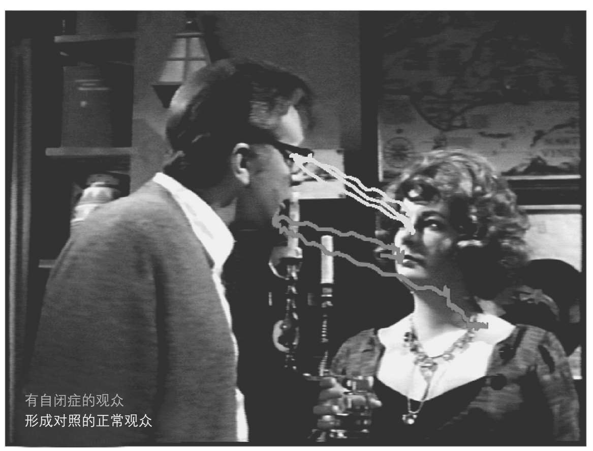

大卫从很小的时候开始似乎就从未注视过别人。他甚至避免眼神接触，有人要拥抱他时还会扭过身去。妈妈试图抱他时他的身体也不配合，被抱起时身体很僵硬。长大后他多少愿意去注视熟悉的人了，但仍不会享受身体接触，而独处时他最开心。
这就是第二大理论：自闭症患者生理上缺乏社交的固有内在驱动。证据表明这种内驱力自出生起就很明显。婴儿喜欢看人脸而不是其他物体，他们要听人的话语而非其他噪声。但这只是个开始。在一岁之前婴儿始终不断地参与进互动中，主要是和妈妈，也会和其他人。这些互动非常令人愉悦。
一个很容易观察到的例子是感情的分享，不论是微笑还是皱眉。已有实验表明，婴儿对与母亲面对面互动的时机有着精确的敏感性。在一个实验中，妈妈和宝宝能通过监视器来看到和听到对方。她们仍能愉快互动，表现出完美同步的运动和表情。如果母亲在监视器中的画面在短时间内卡住了，就会立刻导致婴儿的沮丧。健康的小婴儿简直是完完全全的社交尤物。
第二大理论的拥护者们还认为，联合注意力是极其重要的对他人感兴趣的标志。实际上，联合注意力同样被第一大理论的拥护者们称为心智化的第一个标志。可能两种看法都对。
这个过早建立起来的社交驱动，必然在大脑中有其基础。对于小婴儿的生存，这大概是不可或缺的。而大脑基础在自闭症中可能会发生错误。许多自闭症研究者研究的目标大脑区域各不相同，都被称为社交大脑。一个特别的理论是，有个大脑系统支持着我们对他人的情感回应，这个系统主要位于杏仁核内。假如这个系统发生错误，可以导致自闭症中一系列显著的社交和交流问题。这些问题的共同之处包括对他人的冷淡，甚至连看别人都有困难，更进一步的后果还包括没有联合注意力和难以认出他人。
脸、身体和眼睛的世界
第二大理论使我们意识到我们都生活在一个人的世界。人，包括他们的脸、身体、眼睛和他们的过去，不仅总是在我们周围，也一直存在于我们的思想里、记忆里、梦境中及想象里。有没有可能，对自闭症人士来说并非如此？他们拥有多么不同的内心世界。当我们数年后遇到个老朋友，我们可以轻而易举回忆起当初的分别是友善的还是有纷争的。想象一下你如果做不到这一点会是什么样。你必然认为这个由人构成的世界错综复杂，变幻莫测。
以下文字节选自一位患阿斯伯格综合征的匿名人士所写的内容：
人的世界里最重要的事情之一就是人脸，而人脸上吸引我们注意力的则是眼睛。
在一次想象中的研究里，科学家们让人们观看著名好莱坞电影《谁害怕弗吉尼亚·伍尔夫》，电影由伊丽莎白·泰勒、乔治·西格尔、桑迪·丹尼斯和理查德·伯顿主演。科学家们追踪观众们的眼神凝视。电影拍摄于1966年，当中有大量深度人际互动场景。因此，片中提供了足够多的机会让人来精确观察当你看到如此极有意义的互动时你究竟在看哪儿。事实上，大多数人看的是角色的眼睛，通常从一个人的眼睛切换到另一人的眼睛。相反，患有阿斯伯格综合征的人倾向于看角色的嘴巴而不是眼睛。通常，他们会看画面中完全没有人的地方。

图12 电影中的场景被呈现在人的眼前，他们的眼神注视被记录下来。深色线条表明的是自闭症谱系的人的眼神凝视。浅色线条是普通人的眼神凝视。后者往往偏好看眼睛。自闭症谱系的人更可能看的是嘴巴
关于自闭症人士如何回应正在故意看某个物体的他人的眼神凝视，激动人心的工作正在进行中。正常情况下，在人看向的地方，我们预计会发现有趣的东西，尤其是那个人先看我们，显示出想要交流什么的意图。如果没有东西，我们会很失望。这个效果可以从大脑边侧的一块区域中大脑激活的增加清楚地看出来，该区域位于颞上沟周围。在自闭症大脑中则没有这种增加。大脑的这块区域在很多自闭症大脑的神经影像研究中已经表现异常。这是社交大脑的关键部位，对心智化也有作用。图10展示了这块区域的位置。很有可能，与社交驱动有关的深层大脑区域和心智化的大脑区域有重合。这一点还有待未来的研究来澄清。
第二大理论的问题
很有可能在正常发育的大脑中存在着内在机制，这些机制偏好社交刺激远多于其他刺激。有可能这些在自闭症大脑中发生了错误。然而，假如自闭症孩子缺失了社交驱动，应该在出生后不久就可能显示出来，那时强大而丰富的驱动在正常情况下已经可见了。确实，根据这一大理论，有可能将诊断自闭症提前到一岁之前。但是，如我们在第一章所看到的，这很难做到。在退化型病例中，关键标志就是丧失社交兴趣。引人注目的是，父母们强烈感觉到在婴儿早期，社交兴趣是存在的。